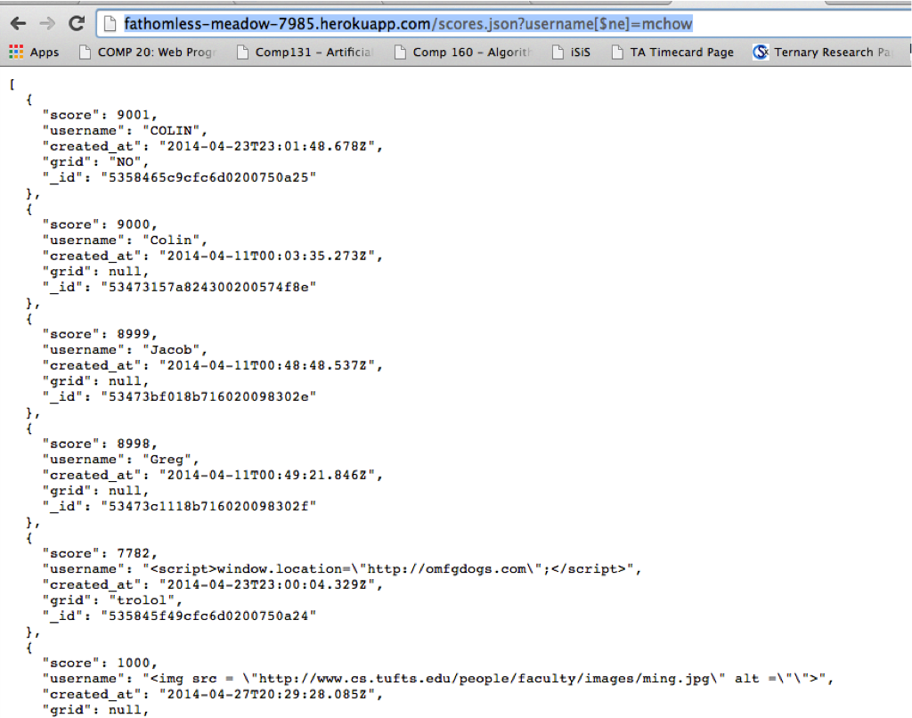

Security Vulnerabilities in 2048 Gamecenter
By: Zach McGowan
Gamecenter by: Colin Watts
Introduction
For assignment 5, I have been hired as a security consultant to assess potential security risks present in Colin Watts' 2048 Gamecenter. The web application to be analyzed is hosted on Heroku at http://fathomless-meadow-7985.herokuapp.com, and MongoDB is used to store the score data that this application will reference. A variety of methods will be used to attempt to maliciously manipulate the application or crash it. Below is a description of how the penetration tests were performed, what the results of the penetration testing were, and recommendations for solving potential security flaws.
Methodology
The curl command was used in order to test out security flaws involving code injection. I was able to send data to the appropriate URI specified in the application as the route for incoming data in order to send "data" that was really attempts to hack the page. Another method used was to simply make use of the query property in the URI to access data that was not intended to be viewed.
Abstract of Findings
I was able to locate several security flaws in the 2048 Gamecenter. The vulnerabilities vary in their severity, but all can be fixed easily and in doing so help to maintain the integrity of the web application. The top three security flaws identified are:
- Data being sent to the web application is not checked to make sure that it is the proper format (e.g., that the score is actually a number, the username is a string of characters, and the date is a date). This may seem harmless, but a number of things can be done to take advantage of this vulnerability, including embedding videos or pictures to the web application.
- The application allows querying of a username to retrieve score data for only that user as one of it's core features. This can easily be taken advantage of to access any or all data contained within the database. This may not seem like a huge issue in this instance, but if this database contained sensitive information only intended to be used internally (e.g., credit card information), it could easily be gathered using a special query.
- This gamecenter application has cross origin resource sharing allowed for all origins. This is what allowed me to hack the web application in the first place, and if this issue were resolved, it makes it much more difficult to tamper with the site like I have done. This could be resolved by only allowing cross origin resource sharing from a particular source, say a version of 2048 hosted on the web that is controlled and monitored by developer.
Issues Found
Video and Image Injection
- Location: app.post('submit.json')
- Severity: High, virtually any type of media can be injected onto the page as a data field, ruining the integrity of the application as a game score summary.
- I was able to locate this issue by using my own jQuery post routine to post to the web application. For the username field, I entered an image in proper HTML5 format, using a URI of an image as the source.
- A screenshot example of this type of media injection is shown below. This issue can be fixed a number of ways, but one easy way to do it is to instal Google Caja's HTML Sanitizer. It can be found on Github as an npm installable package, and using it is simple.
Example Code:
var sanitizer = require('sanitizer');
sanitizer.escape(inputData);
Query Using [$ne]
- Location: app.get('/scores.json')
- Severity: Medium, the severity of this vulnerability would be much higher if it existed in a web application that stored sensitive data in the database.
- This issue was found by entering the following URI in a web browser: http://fathomless-meadow-7985.herokuapp.com/scores.json?username[$ne]=mchow. The [$ne] in the query means 'not equal to'. This tool could be used maliciously to retrieve sensitive data without any knowledge of how it is actually stored in the database.
- This is another issue that is easy to fix, depending on how sensitive your data is. MongoDB by default does not requrie credentials to view data in the database, so a good start is to enable the option that requires user credentials to view the contents of the database. To further protect sensitive information, it could be stored in a separate document that has the public key set to false.
Example Code:
{ id: ...
card_no: ...
name: ...
public: false
}

Cross Origin Resource Sharing
- Location: Anywhere in app.js
- Severity: High, it is crucial that the developer of the web application actively controls who or what is allowed to make requests to this application. Only then is the developer truly safe from malicious requests sent to the web application.
- The fact that I was able to make successful requests to the app from my local machine proves that cross origin resource sharing is allowed from all sources. This allowed me to perform multiple hacks using jQuery post routines and curl commands.
- To resolve this issue, the web application should simply set a specific origin(s) that are approved to send requests to the application. All requests received from sources other than the ones specified by the developer will simply be disregarded. Setting the application CORS settings can be done multiple ways, but I have included code below for a specific example of how to allow requests from trusted sources only.
Example Code:
app.all('/submit.json', function(req, res, next) {
res.header("Access-Control-Allow-Origin", 'my_username.github.io/2048/index.html');
res.header("Access-Control-Allow-Headers", "X-Requested-With");
next();});
Conclusion
As a web application developer, it is always important to maintain control over the privileges granted to users. Extreme care should be taken to only allow users access to data that is intended to be shared, especially when sensitive data is involved. If an outside provider is used to store data (such as MongoDB), you should explore the privacy capabilities before using their services (any decent data storing entity should provide total control of privacy settings). To prevent hacks, the CORS settings should be carefully managed. Using CORS tools to ensure only trusted sources can interact with your application will prevent malicious attacks. Finally, for applications that require user input, a sanitizer tool such as Google Caja's HTML Santiizer should be used to guarantee that all user input is legitimate and safe.